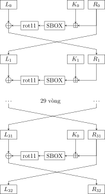

1.6. Magma¶
Hệ mật mã Magma được chính phủ Xô Viết chọn làm chuẩn mã hóa. Cũng giống như hệ mật mã DES, Magma sử dụng mô hình Feistel cho các vòng mã hóa, được định nghĩa trong GOST 34.12-2015, trước đây gọi là GOST 28147-89.
Phần này tham khảo chính từ [7].
Độ dài khóa là \(256\) bits. Độ dài khối là \(64\) bits. Magma biến đổi trên \(32\) vòng để cho ra ciphertext.
Magma thực hiện biến đổi trên \(32\) vòng Feistel. Khối đầu vào \(64\) bits được chia thành hai nửa trái phải, mỗi nửa \(32\) bits.
1.6.1. Key schedule¶
Khóa \(256\) bit được chia thành \(8\) cụm khóa con, mỗi khóa con \(32\) bit.
Nếu ta kí hiệu \(256\) bit của khóa là \(k_{0} k_{1} \ldots k_{254} k_{255}\) thì ta có các khóa con là
Từ vòng \(1\) tới \(24\) sử dụng lần lượt các khóa \(K_0\), \(K_1\), ..., \(K_7\) rồi lặp lại thứ tự đó.
Từ vòng \(25\) tới \(32\) sử dụng theo thứ tự ngược lại, từ \(K_7\), \(K_6\), ..., \(K_0\).

Hình 1.6 Mô hình mã khối Magma¶
1.6.2. Round function¶
Như ta đã biết, trong mô hình Feistel, mỗi khối plaintext được chia thành hai nửa trái phải \((L_0, R_0)\). Sau đó ở mỗi vòng biến đổi thì
với \(i = 0, 1, \ldots\) và \(K_i\) là khóa con ở vòng \(i\).
Hàm \(f\) của Magma khá đơn giản, bao gồm ba động tác là cộng modulo \(2^{32}\), SBox và xoay \(11\) bits.
Đối với việc cộng modulo \(2^{32}\), ta xem block \(R_i\) và \(K_i\) như những số nguyên \(32\) bit, cộng chúng lại và modulo \(2^{32}\), nghĩa là \((R_i + K_i) \bmod 2^{32}\).
Đặt \(T_i = (R_i + K_i) \bmod 2^{32}\). Như vậy \(T_i\) có \(32\) bits. Ta chia \(32\) bits này thành \(8\) cụm \(4\) bits. Ứng với mỗi cụm \(4\) bits chúng ta cho qua một hoán vị. Như vậy cần \(8\) hoán vị (SBox). SBox được sử dụng chung cho tất cả vòng.
Theo wiki thì SBox có thể bí mật. Tuy nhiên việc mã hóa và giải mã cần sử dụng SBox giống nhau. Do đó thiết bị mã hóa và giải mã có cùng cơ chế pseudo-random để sinh ra SBox giống nhau.
SBox được quy định theo tiêu chuẩn chính phủ Nga là
sbox = [
[0xC, 0x4, 0x6, 0x2, 0xA, 0x5, 0xB, 0x9, 0xE, 0x8, 0xD, 0x7, 0x0, 0x3, 0xF, 0x1],
[0x6, 0x8, 0x2, 0x3, 0x9, 0xA, 0x5, 0xC, 0x1, 0xE, 0x4, 0x7, 0xB, 0xD, 0x0, 0xF],
[0xB, 0x3, 0x5, 0x8, 0x2, 0xF, 0xA, 0xD, 0xE, 0x1, 0x7, 0x4, 0xC, 0x9, 0x6, 0x0],
[0xC, 0x8, 0x2, 0x1, 0xD, 0x4, 0xF, 0x6, 0x7, 0x0, 0xA, 0x5, 0x3, 0xE, 0x9, 0xB],
[0x7, 0xF, 0x5, 0xA, 0x8, 0x1, 0x6, 0xD, 0x0, 0x9, 0x3, 0xE, 0xB, 0x4, 0x2, 0xC],
[0x5, 0xD, 0xF, 0x6, 0x9, 0x2, 0xC, 0xA, 0xB, 0x7, 0x8, 0x1, 0x4, 0x3, 0xE, 0x0],
[0x8, 0xE, 0x2, 0x5, 0x6, 0x9, 0x1, 0xC, 0xF, 0x4, 0xB, 0x0, 0xD, 0xA, 0x3, 0x7],
[0x1, 0x7, 0xE, 0xD, 0x0, 0x5, 0x8, 0x3, 0x4, 0xF, 0xA, 0x6, 0x9, 0xC, 0xB, 0x2],
]
Nếu \(T_i\) được viết dưới dạng \(32\) bits là \(t_{31} t_{30} \ldots t_1 t_0\) thì SBox tương ứng của nó là
Nói cách khác, \(t_{4i+3} t_{4i+2} t_{4i+1} t_{4i}\) dùng \(S_{7-i}\) với \(i = 0, 1, 2, \ldots, 7\).
Cuối cùng, việc xoay trái \(11\) bits (rot11) chỉ đơn giản là đưa \(11\) bit đầu về cuối và đưa \(21\) bit cuối lên đầu.
Để giải mã ta vẫn sử dụng round function như lúc mã hóa, chỉ cần viết với thứ tự ngược lại là được. Như vậy
do \(R_i = L_{i+1}\). Lưu ý rằng khóa con lúc này là \(0\) tới \(7\) cho \(8\) vòng đầu, và \(7\) về \(0\) (rồi lặp lại) cho \(24\) vòng sau.